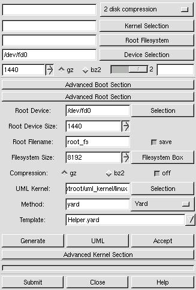
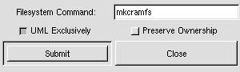

bOOTrOOT makes the development, construction, and testing of distributions fun and simple.
Download gBootRoot
Newest version
gbootroot source (type make to install)
gbootroot debian package
Add-ons
make-debian-x11 source (type make to install)
make-debian-x11 debian package
Users who use packaging tools which support apt should add these lines to
their sources.list:
deb http://prdownloads.sourceforge.net/avd ./
Older versions found at this site
How to Use gBootRoot
 The most important button to
familiarize yourself with is the Submit button which starts the whole process;
dialogs are presented as the process continues asking you if you want to
continue "OK" or stop "Cancel".
The most important button to
familiarize yourself with is the Submit button which starts the whole process;
dialogs are presented as the process continues asking you if you want to
continue "OK" or stop "Cancel".
The first row presently has only one Boot Method choice: "2 disk compression." Clicking on the menu on the right selects the Boot Method.
The second row allows you to select the kernel for the Boot/Root set. You may either use the file selector button on the right hand side, or you may type in the location on the left hand side.
The third row allows you to select the compressed filesystem you are providing, using either of the two ways mentioned before. You may use a pre-made root filesystem or you may create one using one of the Methods provided in the Advanced Root Section.
The fourth row allows you to select the device you want to use. The default device is the first floppy disk - /dev/fd0.
The fifth row allows you to choose the size of the device being used. The default size of 1440 assumes you are using a floppy drive (Note: You may want to experiment with 1722 which works fine with many floppy drives.), but can be used with other sized devices like tape drives. Click on the appropriate radio button to choose either gzip or bzip2 compression if the program doesn't automatically detect it.
Verbosity Box
 The slider bar on the right allows the output of the verbosity box
to be
changed from the highest (2) to the lowest setting (1) or to be turned off (0)
or on again. At times it may be advantageous to turn off the
verbosity box
since large quantities of output to this box may cause gbootroot to use too
much cpu power; however, output may still be found in the text file "verbose"
in /tmp/gbootroot_tmp'time-date'.
The slider bar on the right allows the output of the verbosity box
to be
changed from the highest (2) to the lowest setting (1) or to be turned off (0)
or on again. At times it may be advantageous to turn off the
verbosity box
since large quantities of output to this box may cause gbootroot to use too
much cpu power; however, output may still be found in the text file "verbose"
in /tmp/gbootroot_tmp'time-date'.
Using the Advanced Boot Section
 Libraries & Binaries & Modules check boxes: Turn off and on the
stripping of symbols. The stripping
behavior for libraries may be changed by clicking on the right mouse button
to change --strip-debug to --strip-all. Binaries default to
--strip-all and Modules default to --strip-debug.
Libraries & Binaries & Modules check boxes: Turn off and on the
stripping of symbols. The stripping
behavior for libraries may be changed by clicking on the right mouse button
to change --strip-debug to --strip-all. Binaries default to
--strip-all and Modules default to --strip-debug.
"Devel Device" If the device used for development is different than the actual boot device, use this field to indicate that device. You will have to run lilo -v -C brlilo.conf -r "device mount point" manually at a later time on the actual boot device.
"Opt. Device" Add devices to the boot disk which are necessary for the kernel to function properly. Put a space between each device. For instance, /dev/fb0 for frame buffer devices.
"append =" Add append options to brlilo.conf. If you are using a frame buffer device you could add something like video=matrox:vesa:402,depth:16.
"Kernel Module" Add the modules found in /lib/modules/kernel-version which are necessary for the Boot Method to work properly. If these modules aren't found in the modules directory it is assumed that they either are in the kernel or they do not exist. In the case of 2 disk compression, floppy needs to be included in the kernel or included as a module. Kmod inserts the modules, and kmod needs to be built into the kernel along with initrd and ramdisk."
"Kernel Version" Override the kernel version number found in the kernel header. This will change the /lib/modules/kernel-version directory.
System.map: When a non-running kernel is chosen it is important
to include a copy of that kernel's System.map file so that depmod can use
the correct set of kernel symbols to resolve kernel references in each
module. This can be found in the kernel's source code after
compilation.
Using the Advanced Root Section
 "Root Device" This is the device used for the root filesystem when constructing the Boot/Root set. You may choose a device which is different than the Boot device, but presently only floppy devices are supported.
"Root Device Size" The size of the actual media used for the Root Device.
"Root Filename" The name give to the root filesystem when initially made in the temporary creation location. The save button allows the creation to be saved in the permanent default location when the Accept button is pressed.
"Filesystem Size" Root Methods make the filesystem the size which is specified here.
"Compression" Off by default to allow user-mode-linux testing. Turn on compression when you are ready to use a Boot Method which requires compression.
"Method" The root filesystem creation method.
"Template" The template associated with a Root Method. Not all Root Methods have templates.
"Generate" This puts the chosen Root Method in action.
"UML" Abbreviation for user-mode-linux. This is a linux kernel which runs on top of the host system's linux kernel and allows a you run a live root filesystem.
"Accept" This accepts the created root filesystem if it is found in the temporary creation directory. The UML box and the main section will now reflect the path to this root filesystem. You can now test with the UML button or a put together a complete Boot/Root set with the Submit button.
User Mode Linux Box
 "Xterm" Choose an xterm with its executable options switch.
"Xterm" Choose an xterm with its executable options switch.
"Options" Enter uml command-line options like: mem=64, devfs=nomount.
"Root_Fs" Choose an uncompressed root filesystem. Append with ubd?=.
"Abort" Abort user-mode-linux kernel processes.
About the Yard Box

The check boxes at the bottom represent the different stages involved in creating a root filesystem. The behavior of these stages may be altered in three ways: Edit->Stages->one-by-one (default) will perform each stage sequentially, stopping between each stage, the user may continue the process by pressing the Continue button. Edit->Stages->continuous proceeds non-stop through all the stages. Edit->Stages->'user defined' allows the user to choose any stages the user wants, and will then proceed through all the chosen stages. Choosing only 'Check', 'Links & Deps', 'Create' is a good example.

The behavior of some of the stages may be altered. For instance Alt-T allows you to choose which tests to run on the newly created root filesystem.

Press Alt-S to enable template text searching in either direction. Find exact matches or ignore case with the case sensitive check box.

Use Ctl-S to save changes to a template, Alt-A to save the template with a new name, or Alt-N to create a new template. bOOTrOOT will not allow read-only templates (ex: Examples) or template links to be saved with their own name; after you make changes to these kind of templates, save them with a new name to preserve the changes.

Edit->Settings->Stripping allows you to turn off/on stripping for Libraries, Binaries, and Modules. --strip-all is the default for binaries and libraries, and --strip-debug is the default for modules; however libraries may be changed to --strip-debug in the settings.
Edit->Setting->Paths allows you to prepend a new search path to your environments $PATH variable.

Edit->'File System" may alter the type of filesystem used to make the root filesystem. Because the filesystem is created on a loop device, some filesystem types may complain or not be created at all.
Edit->Replacements in your $HOME/.gbootroot/Replacements directory using an editor of your choice.

Create->Replacements creates special replacement files. Presently it creates an fstab configuration file as Replacements/etc/fstab.new in $HOME/.gbootroot/yard/.
Little things you may want to know:
* gBootRoot requires ash for initrd. Ash is a feather weight version of Bash.
 FAQ
FAQ
What's the advantage of using this program?
BootRoot was the original program, but I decided that a GUI approach provided the user much more versatility and power in creating distributions. Since the first gBootRoot, bOOTrOOT has become a full blown distribution creation program which may be used by a normal user. It may be used for the creation of root filesystems in every imaginable application from Embedded Systems to Mini Distributions to Macro distributions to Full sized Distributions. The root and boot filesystems may be tested long before implementation by using user-mode-linux. Boot Methods are provided to allow root filesystems to run from different types of media. Historically, developers have written scripts which have focused on providing a particular type of root filesystem and booting method. Observation, reveals that all these approaches share many commonalities. gBootRoot has been designed to embrace these similiarities, and to allow developers to create drop-in methods via modules or easy to understand templates. gBootroot is the GIMP of distribution creation!
How can I test gBootRoot?
(Note: You may run most of these tests as a normal user. See the exceptions which apply in the FAQ.)
1. Download root_fs_tomrtbt_1.7.205.bz2 from user-mode-linux at Sourceforge to your $HOME/.gbootroot/root_filesystems.
2. bzip2 -dc root_fs_tomrtbt_1.7.205.bz2 > root_fs_tomrtbt_1.7.205.
3. Run gbootroot. Click on the Advanced Root Section (ARS), click on the UML button. Select root_fs_tomrtbt_1.7.205, add devfs=nomount to the options, and click on the Submit button.
4. Click on the Advanced Boot Section (ABS). Root_fs_tomrtbt is about 16M, so add ramdisk_size=16384 to the 'append=' entry. From the main box choose '2 disk compression', and press on the Root Filesystem button and select root_fs_tomrtbt_1.7.205.bz2.
5. Click the Submit button on the main box. Have two floppy disks ready.6. When you boot the boot disk you will see Lilo, you may access the menu using [Ctrl] and [Tab] to see the available images, or wait for the prompt to insert the root disk.
7. Download root_fs_debian_x11-(latest revision).bz2. Then follow the instructions in the first three steps, but don't add devfs=nomount. This root filesystem was created with the make_debian-X11 script from the make-debian-x11 add-on found at gbootroot's Sourceforge home.
8. Click on the ARS if its not already opened. Choose Yard from the Method pull-down menu. Choose Example-Mini.yard from the pull-down Template menu. Click on the Generate button. The Yard Box will pop up. Click on the Continue button until the Create check box turns off. You could continue to the tests, but they really wouldn't apply to this minimalistic example because there are no links or login type files in the template.
9. Experiment with Edit->Stages from the Yard Box menu. Try different types of staging behavior, and notice the differences.
10. Test your creation with the UML box as explained in step 3. You will want to add init=/bin/bash to the Options entry.
11. At this point you will probably want to play around a little bit. Familiarize yourself with the Format Rules found near the top of the template. You may want to save the template with a different name and experiment with changes, or create a new template using File->New (Shortcut: Alt-N).
12. Choose Example.yard from the Template menu in the ARS. Save it with a new name.
13. There are two types of inittabs provided for each major distribution type. The inittab with nodevfs appended doesn't use the device fs, i.e. the devfs=nomount kernel option. Uncomment the inittab, getty, and gettydefs (if required) for your distribution type. If you aren't using Debian make sure to comment (#) out the corresponding stuff for Debian.
14. Example.yard template introduces you to Replacements like the inittabs described above. Replacements can be anywhere and are specified in the template as either an absolute path or relative to $PATH (Edit->Settings->Path); the default path location for Replacements for users is $HOME/.gbootroot/yard/Replacements. Also, this template introduces you to links, $VERSION, how library dependencies are automatically figured for binaries and the automated approach for finding service modules and dependencies for PAM and NSS. Once you learn the format rules and how they are interpreted by the program you will find that making your own templates is quite simple.
15 Click on the Continue button until you finish the Space Left stage. Adjust the Filesystem Size in the ARS to a size larger than the Total space shown in the verbosity box. Create your root_fs, and make sure there was enough room left. You may have to adjust the size and run Create again.
16 Now that you have a root filesystem you may continue to the Test stage and observe what is missing. Next run the root_fs from the UML box. If things don't work correctly you will have to hunt down the cause, make the appropriate changes and proceed through the stages again. If you only make a change to a Replacement, you only have to run the Create stage again. If you make a change to the template you have to run at least the Check, Links & Deps, and Create stages again.
17. Now that you have done your homework, I set you free to create your own root filesystems from your own templates with replacements of your own choice. Create a root_fs which can fit on a block device, and then create an emergency disk customized for your own system, or create your own customized macro distribution and run it from the UML box to try things you never would have dreamed of doing on your host system. And that is just the beginning of the things you can do.
What are all these CVS directories doing in my replacements?
CVS directories are deliberately put in the Replacement directories to prevent users from making changes to global replacement files. This allows developers who create add-ons (ex: make-debian-x11) to remain confident that any changes made to add-on replacements will remain available to all users. Replacements from add-ons are placed in the /usr/share/gbootroot/yard/Replacements directory. When a user opens up gBootRoot, the program checks to see if there are any new replacements and then creates symlink from the $HOME/.gbootroot/yard/Replacements directory to the replacements repository. In general the repository for replacements is owned by root, so normal users can't make changes to these files anyways; however, root should make it a policy always to make changes from the $HOME location while using an editor which respects versioned files (i.e. Emacs). Then the administrator will not be able to make any changes to the replacements repository because the CVS directories keep date information which prevents the editing of these files. It is highly recommended to follow this procedure, and not to delete the CVS directories because /usr/share is meant to be used for data which shouldn't be modified (see FHS).
Can I use a program linked to uClibc in the template?Binaries are auto-magically checked to discover whether they require libc6 or uClibc. If they are found to require uClibc /usr/i386-linux-uclibc/bin/ldd is used to discover shared library dependencies, otherwise ldd is called without any path.
What do you mean by macro distribution?A macro distribution is a term I coined. It implies a software distribution larger than a mini distribution usually associated with 1.44 to 1.722 sized floppy disks, but smaller than a base distribution which provides the foundation to create a full size distribution. It is usually pruned, and provides the absolute minimum needed to provide all the functionality usually associated with a full sized distribution, yet it still uses the same libraries and binaries. Because it can be made quickly, it is useful for creating a current snapshot of ones own host systems, and can be used to run experiments safely without fear of corrupting the host system via user-mode-linux.
How am I able to create root filesystems as a normal user?Genext2fs is used. This progam allows a normal user to create an ext2 filesystem with all uids and gids belonging to 0 (root) without the need for a loop or ram device. Device nodes are created from a device table file written to by gbootroot. This program is authored by Xavier Bestel, but the version used by gbootroot has modifications from Erik Andersen (BusyBox) to allow a device table to be used rather than a device listing. The maximum allowable size for a filesystem is 8192k. User and group information can be changed when the filesystem is run from a kernel.
How can I create boot disks as a normal user?
What is make_debian, and how do I use it?
Make_debian is a script which takes information from a Debian installation and creates a template which can be used to make a macro distribution using gBootRoot's yard method. It creates replacements for important configuration files to represent the actual packaging state it will be providing. In order to use this script you need to be running a Debian-like distribution, anotherwards, one which uses dpkg, apt and file-rc to maintain its packaging and boot hierarchy. Dswim is used to collect information used in making the template. You will need to build the filesystem as root because it exceeds the 8192k limit provided by genext2fs.
Run make_debian from the command-line. The script first finds all required packages on your host system, then it checks to see if any of the extra packages mentioned in its configuration are missing. As a rule, even if extra packages are missing, a working distribution will still be created. The script will then ask you a few questions, and then proceed to make Debian-`uname -n`.yard in your template directory.
Extra Packages and static template data:
You can resolve missing packages by installing them on your system, or you can
edit the script and replace these packages with a suitable replacement,
since you may be using a different version of Debian then the author
used when putting together make_debian. Make a copy of make_debian,
and then edit the part under EDIT HERE between qw().
You may edit the static data in the template from
within the script below where it is clearly marked as editable.
While on the subject the make-debian-x11 add-on is actually the
result of
making these modifications. First, extra packages were
added, second, extra replacements were provided and the static information
in the template was modified to reflect these replacements.
When you start a kernel image with 1, you are telling it to start in runlevel 1, not in single mode. Use "single" instead.
While on the subject, it should be pointed at the setting up init and its runlevels is one of the most challenging areas of creating a bootable root_fs. Often your creation will only work with "single" until all the conflicts are resolved. Things are complicated even futher by the fact that devices can now be set up in two majors ways: tty? or ttys/? (devfs). Fortunately, user-mode-linux comes in very handy for hunting down all the bugs.
What does the 2 disk compression method do?
This Boot Method creates a boot disk with lilo, a kernel and an initrd image. The initrd script mounts another root disk with a compressed (gzip or bzip2) filesystem.
There isn't enough room left on my 1440 floppy to make a Boot or Root disk. Is there any way to free up more space apart from reducing the size of the kernel?
Move the device size to 1722. This is a trick that tomsrtbt uses on his famous rescue disk.
(Update 10/06/2001)
Up until mke2fs version 1.19 you were able to do
`mke2fs -F /dev/fd0 1722` on a 1440 device without any problem, but since
then mke2fs has become much more particular about enforcing actual device
size. . Mke2fs will complain:
"mke2fs: Attempt to write block from filesystem resulted in short write zeroing block 1600 at end of filesystem."
I understand Theodore Ts'o reasoning for doing this, but I strongly believe that the old behavior was very useful for people creating mini-distributions so I have issued Feature Request #468652 at e2fsprogs site at Sourceforge. It should be noted that fdformat is an unacceptable solution because it tends to be machine specific, and the original mke2fs behavior made floppies that worked everywhere. Feel free to add your comments to the Feature Request. Thanks.
gBootRoot doesn't start because it can't locate Gtk.pm?
This program requires Gtk-Perl available from CPAN, Freshmeat or most GNU/Linux distributions.
If you roll the floppy density counter down to 0 and then try go back up towards 1440 and 1722, you get very funny figures.
This is because of the way Gtk works. There are two adjustments, step and page increments. When you press your first mouse button the step has been set to 282 so that a person can easily switch between 1440 and 1722. When you use your second mouse button the page is set at 360. You can go down to zero by pressing your third mouse button on the down arrow. Now page up with the second button to 1440 and step with the first button to 1722. Pretty cool, eh?
Why we are on this subject please check out these keyboard shortcuts for Gtk.
Motion Shortcuts
Editing Shortcuts
Selection Shortcuts